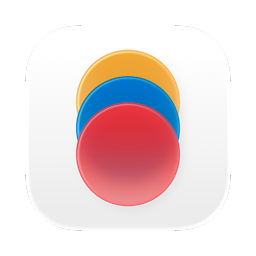

Welcome!
While exploring other portfolio websites, I always found myself drawn to the small, random insights people share about their personality - whether it's a blog,
interesting facts or other details. So I, too, want to share a few glimpses of my own personality here, in the hopes that you will find them just as interesting!
Of course, the main purpose remains to share my experiences and the projects that I have created along the way.
News
- 03. Dec. 2025: Nodes released on the app store! Download the app here.
- 07. Oct. 2025: Nodes open beta released!

Nodes
A smart journaling app for MacOS. Click me to read more.